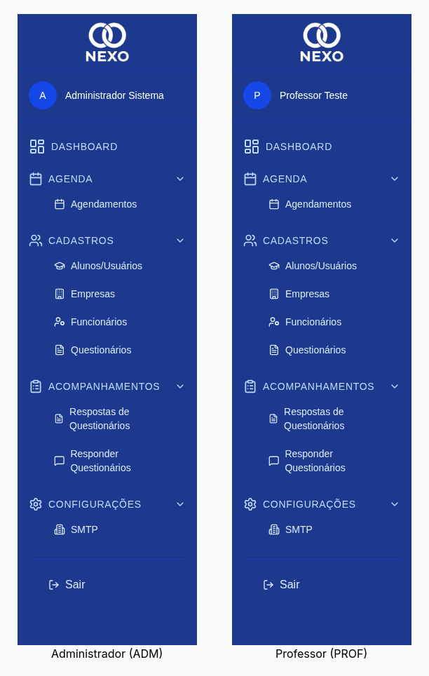

Manual do Usuário NEXO
Bem-vindo ao manual oficial do NEXO — Sistema de Acompanhamento Acadêmico e Profissional. Este guia mostra, passo a passo e com capturas reais de tela, como executar cada tarefa no sistema.
- 00:00 — Introdução e Acesso
- 00:45 — Painel Principal
- 01:19 — Cadastro de Alunos
- 02:02 — Cadastro de Empresas
- 02:24 — Cadastro de Funcionários
- 02:45 — Construtor de Questionários
- 03:27 — Responder Questionários
- 03:48 — Respostas dos Questionários
- 04:08 — Agenda e Eventos
- 04:28 — Configuração de E-mail (SMTP)
- 04:44 — Encerramento
O que é o NEXO?
O NEXO acompanha a trajetória acadêmica e profissional dos alunos desde o cadastro até o encaminhamento para o mercado de trabalho. Permite a gestão de empresas parceiras, registro de funcionários, aplicação de questionários, agendamento de eventos e geração de relatórios em PDF.
Perfis de acesso
O acesso ao sistema é controlado por cargo (função). Cada cargo libera um conjunto diferente de telas e ações:
| Funcionalidade | ADM | RH | COORD | PROF | DIR |
|---|---|---|---|---|---|
| Dashboard | ✓ | ✓ | ✓ | ✓ | ✓ |
| Cadastro de alunos | ✓ | ✓ | ✓ | ✓ | ✓ |
| Cadastro de empresas | ✓ | ✓ | — | — | — |
| Cadastro de funcionários | ✓ | ✓ | — | — | — |
| Questionários (criar/editar) | ✓ | — | ✓ | ✓ | ✓ |
| Responder questionários | ✓ | ✓ | ✓ | ✓ | ✓ |
| Agenda | ✓ | ✓ | ✓ | ✓ | ✓ |
| Configuração de SMTP | ✓ | — | — | — | — |
A imagem abaixo mostra o menu lateral visto pelo Administrador e por um Professor: o cabeçalho identifica o usuário logado e os itens são os mesmos para todos os perfis — quando um usuário sem permissão tenta abrir um item restrito, o sistema exibe uma página de "acesso negado".

Por onde começar
1. Acesso
Como entrar, recuperar e redefinir sua senha.
2. Dashboard
Indicadores, gráficos e atalhos da tela inicial.
3. Alunos
Cadastrar, editar e encaminhar alunos para empresas.
4. Empresas
Manter o cadastro de empresas parceiras.
5. Funcionários
Gerenciar usuários do sistema e seus cargos (ADM/RH).
6. Questionários
Montar questionários no construtor visual.
7. Responder
Aplicar um questionário para um aluno.
8. Respostas
Consultar respostas por questionário ou por aluno.
9. Agenda
Agendar visitas, avaliações e reuniões.
10. Relatórios
Gerar e baixar relatórios em PDF.
11. SMTP
Configurar o servidor de e-mail (ADM).
Use o menu lateral à esquerda para navegar a qualquer momento. Em
telas pequenas (celular/tablet), toque no ícone ☰ no
canto superior esquerdo.